FitTrack
A free, all-in-one fitness app I designed for myself: workouts, protein and weight tracking in one place, with AI suggestions on top.
Design thinking
- 1Empathize
Research showed people are motivated by visible results, but juggle separate apps and tedious manual entry.
- 2Define
Three pain points: low motivation, fragmentation across apps, and generic plans with unclear metrics.
- 3Ideate
One free app for workouts, protein and weight, with gentle AI suggestions the user can ignore.
- 4Prototype
Gray-box wireframes, then digital wireframes and a mapped user flow, then high-fidelity screens in Figma.
- 5Test
Next: usability testing of the AI suggestion flow and a full accessibility pass.
I wanted one app to track my training, free, without switching between three.
Goal: track the whole fitness journey, including daily protein and weight, with suggestions that feel earned.
Flow chart
- Start pagestreak + daily stats
- Body diagramtap a muscle
- Workout list
- Workout logsets and reps
- Stats
- Weekly plan
- Protein intakeAI suggestions
- Weight logmy own addition
- Streak
- Profile
Wireframe
Gray boxes first for every core screen: body-diagram picker, weekly plan, workout log, stats, protein, streaks and profile.
Once the layout held up, digital wireframes added the FIT.TRACK name and nav bar, still in grayscale so structure stayed the focus.
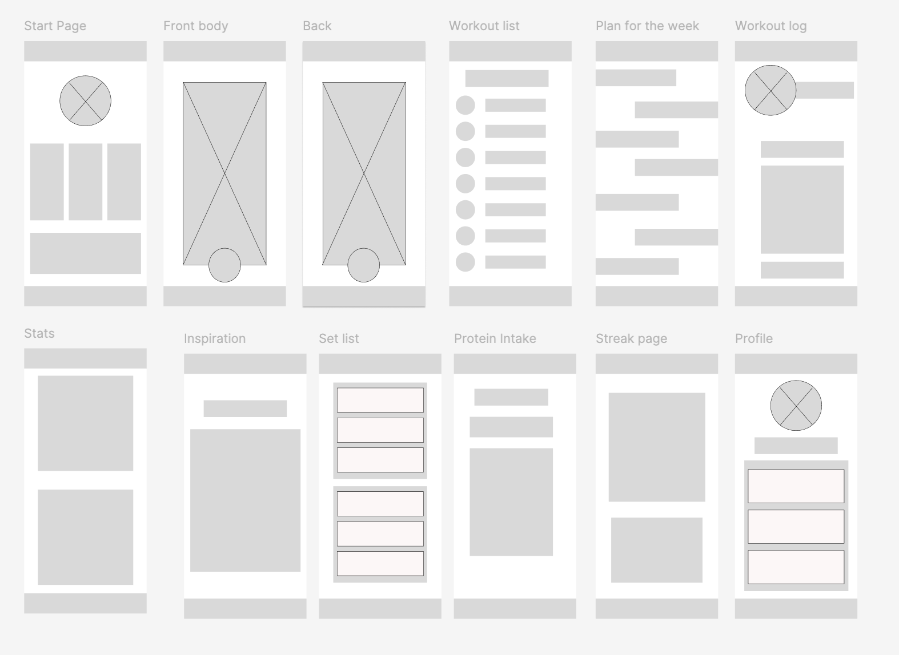
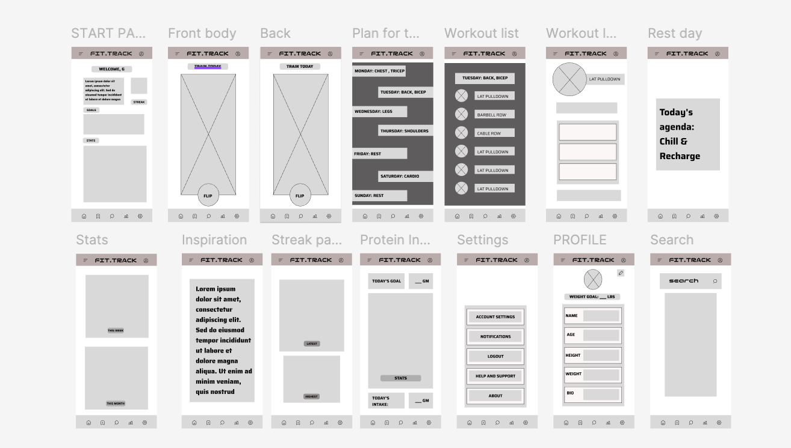
User interface
Gym energy: a black and maroon palette, high-contrast type and a bottom nav built for one hand mid-workout.
AI touches are labelled as suggestions, and the streak is a quiet flame and a day count, not a loud game.
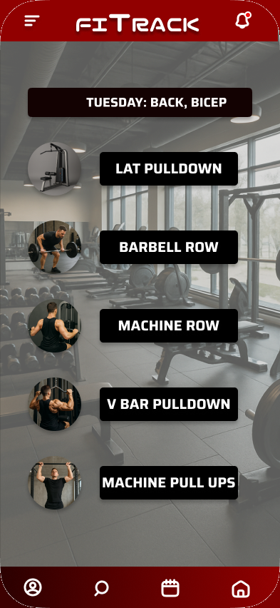
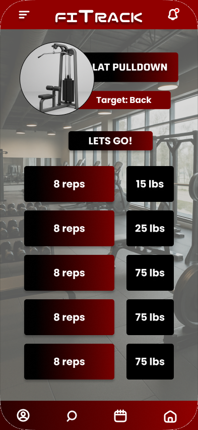
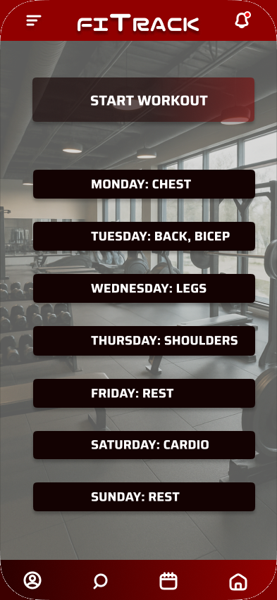
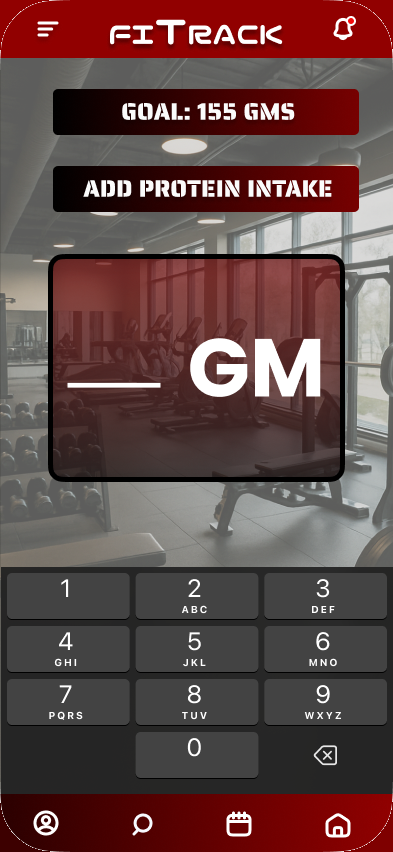
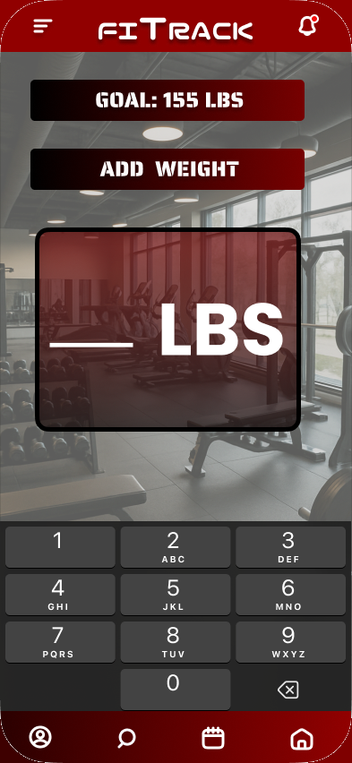
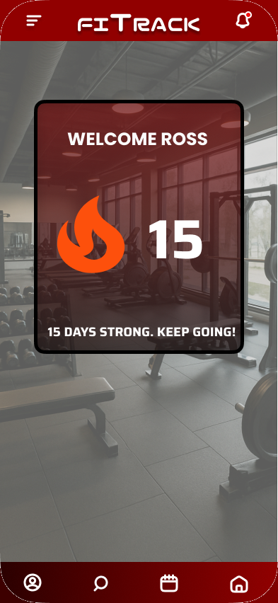
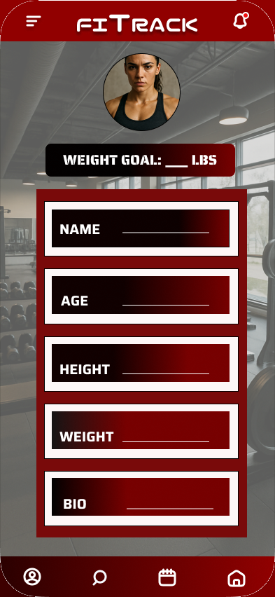
Iteration: before and after
I mapped how a session connects screen to screen: body diagram, logging sets, then back to stats or streaks.
Usability testing on the AI suggestions, to check they feel earned and not intrusive, and a contrast and labelling pass.
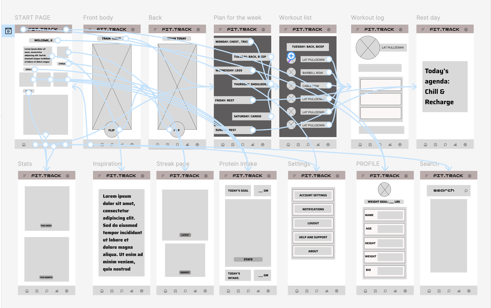
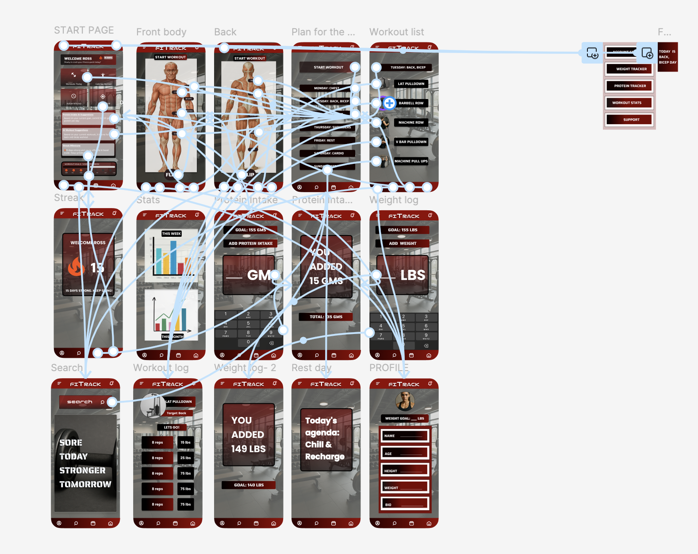
Design system
Components
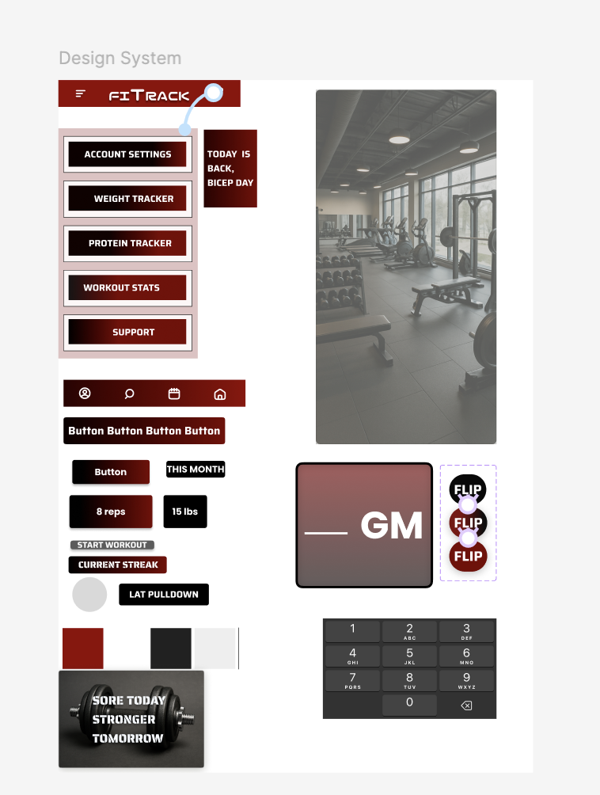
Built for the gym floor
- One-handed bottom nav
- High-contrast type
- Numeric keypad
- Streak and stat cards
- AI clearly labelled
- Reusable components
Outcome
Designing for myself was the best brief: I knew exactly where other apps let me down, so it was easy to cut anything that didn't help someone mid-workout.